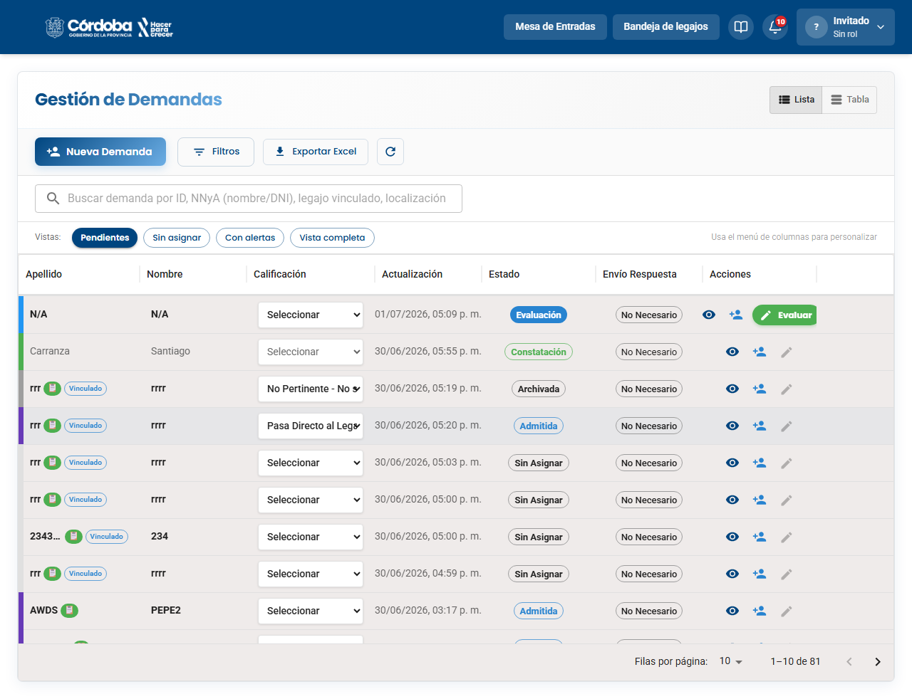
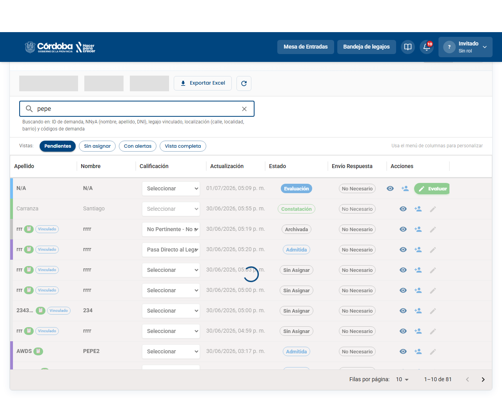
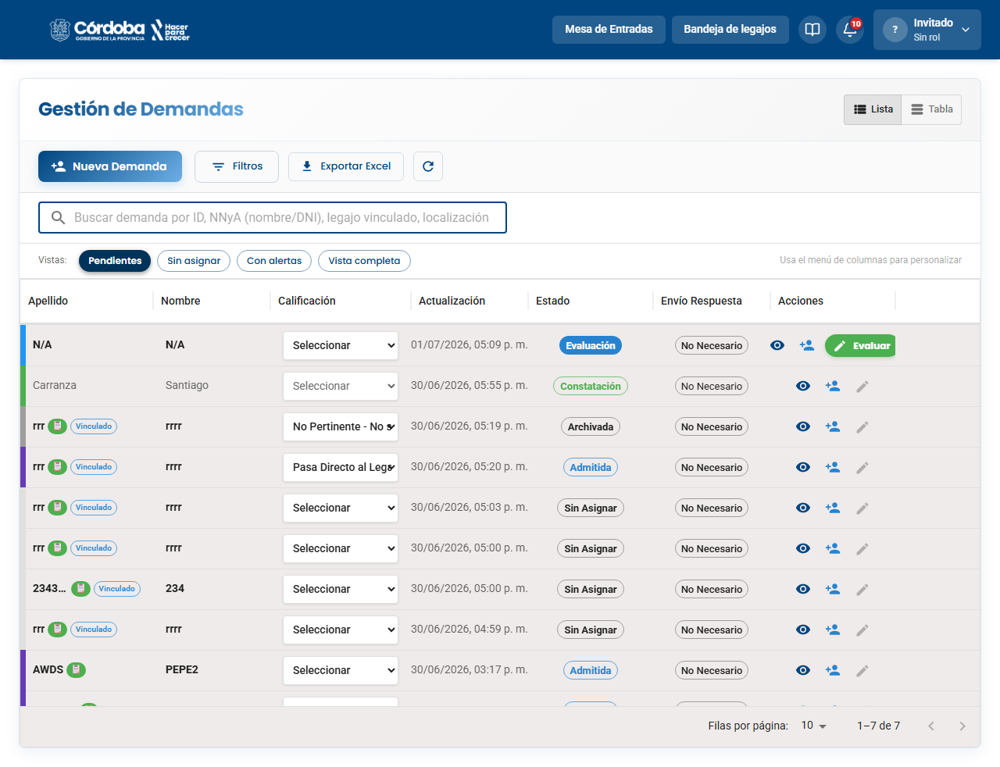
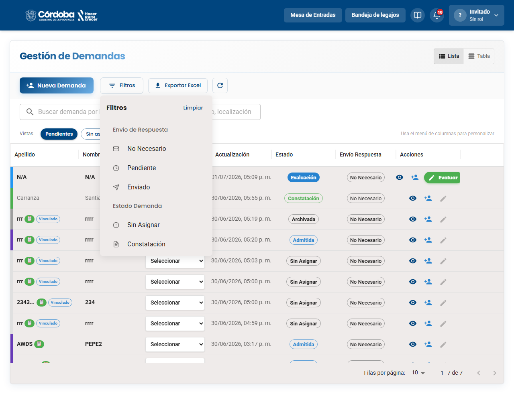
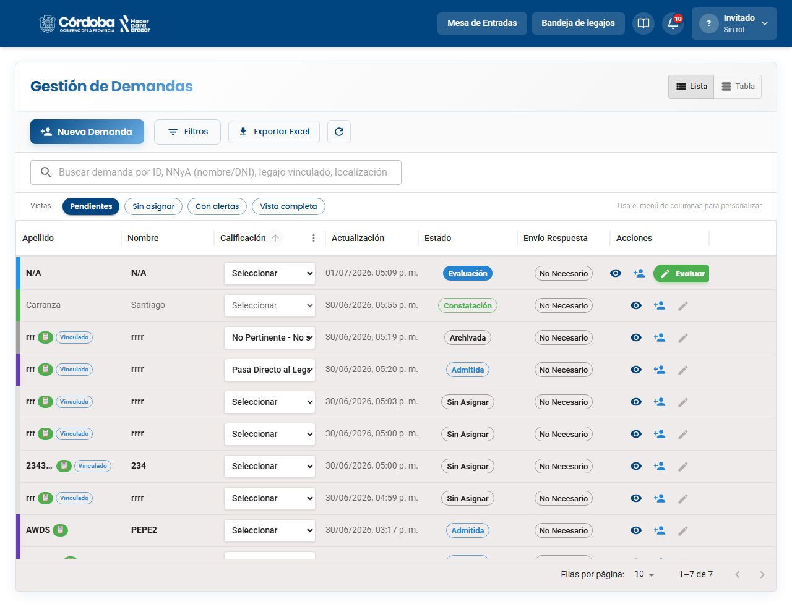
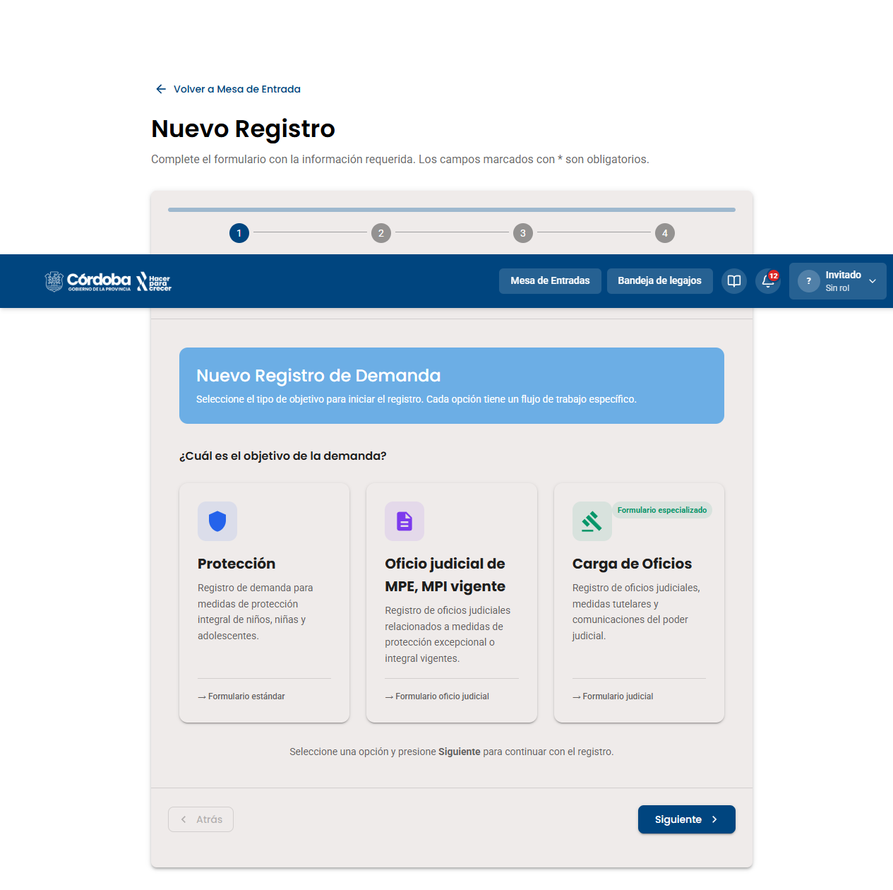
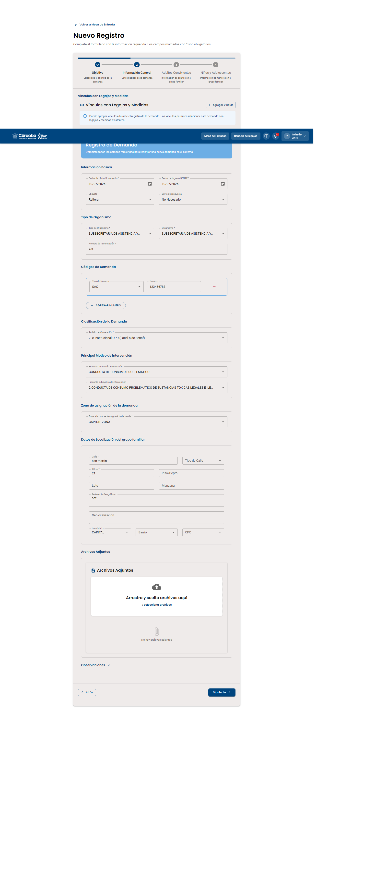
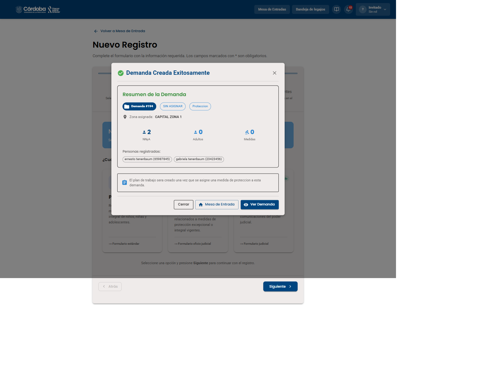
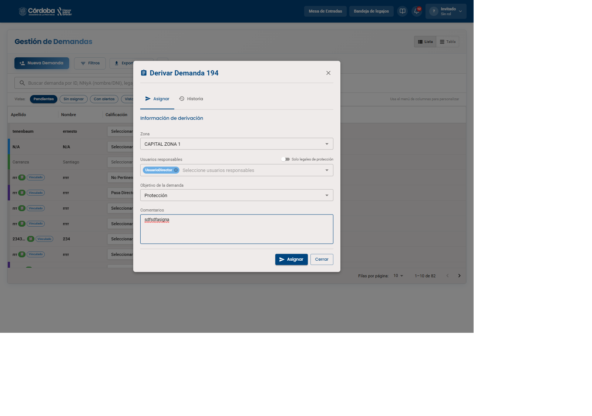
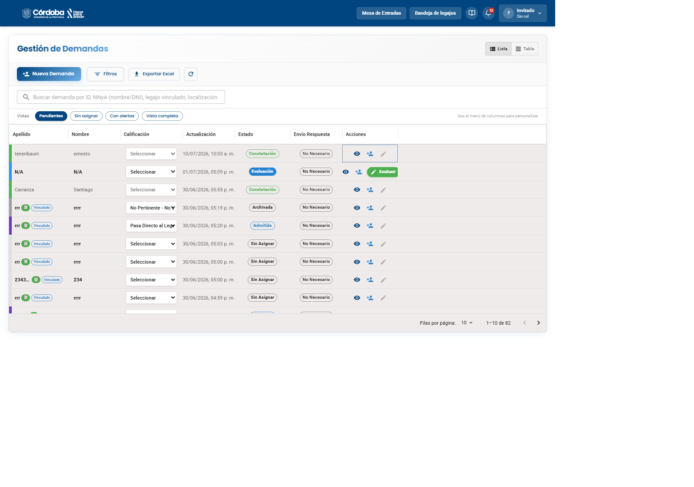

La Mesa de Entradas (también llamada "Gestión de Demandas") es la puerta de entrada de todos los casos: ahí llega cada demanda nueva, se busca, se filtra y se deriva a un técnico. Primero vamos a conocer la pantalla y sus herramientas de búsqueda, y después vamos a crear una demanda de tipo Protección de punta a punta.
Estas son las herramientas que vas a usar todos los días para encontrar y organizar las demandas.





Vamos a recorrer el circuito completo: elegir el tipo de demanda, cargar los datos, confirmar la creación y derivarla a un equipo responsable.





Este es el primer paso real del asistente de Nueva Demanda. Elegí la opción correcta para iniciar el registro de una demanda de Protección.
Registro de demanda para medidas de protección integral de niños, niñas y adolescentes.
→ Formulario estándarRegistro de oficios judiciales relacionados a medidas de protección excepcional o integral vigentes.
→ Formulario oficio judicialRegistro de oficios judiciales, medidas tutelares y comunicaciones del poder judicial.
→ Formulario judicial (especializado)